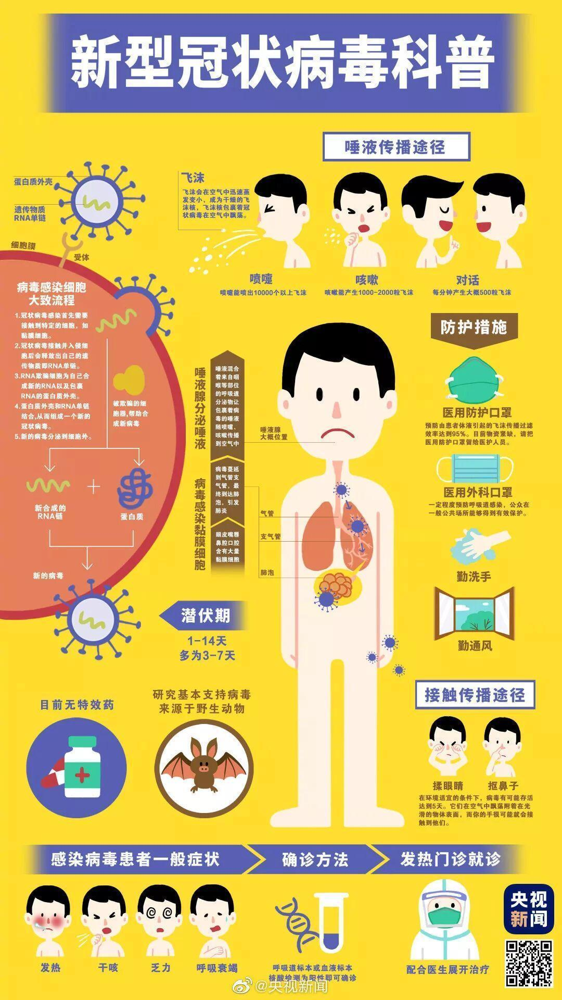

疫情防控，我们在行动！
疫情防控，我们在行动！
关于新型冠状病毒
冠状病毒是自然界广泛存在的一类病毒，因该病毒形态在电镜下观察类似王冠而得名。目前为止发现，冠状病毒仅感染脊椎动物，可引起人和动物呼吸道、消化道和神经系统疾病。

本次感染者的临床表现
一般症状
发热、乏力、干咳、逐渐出现呼吸困难
严重者
急性呼吸窘迫综合征，脓毒症休克，难以纠正的代谢性酸中毒，凝血功能障碍
尽量减少外出活动
（一）避免去疾病正在流行的地区。
（二）建议春节期间减少走亲访友和聚餐，尽量在家休息。
（三）减少到人员密集的公共场所活动，尤其是空气流动性差的地方，例如公共浴池、温泉、影院、网吧、KTV、商场、车站、机场、码头、展览馆等。
个人防护和手卫生
（一）外出佩戴口罩。外出前往公共场所、就医和乘坐公共交通工具时，佩戴医用外科口罩或N95口罩。
（二）随时保持手卫生。减少接触公共场所的公共物品和部位；从公共场所返回、咳嗽手捂之后、饭前便后，用洗手液或香皂流水洗手，或者使用含酒精成分的免洗洗手液；不确定手是否清洁时，避免用手接触口鼻眼；打喷嚏或咳嗽时，用手肘衣服遮住口鼻。
健康监测与就医
（一）主动做好个人与家庭成员的健康监测，自觉发热时要主动测量体温。家中有小孩的，要早晚摸小孩的额头，如有发热要为其测量体温。
（二）若出现可疑症状，应主动戴上口罩及时就近就医。若出现新型冠状病毒感染可疑症状（包括发热、咳嗽、咽痛、胸闷、呼吸困难、轻度纳差、乏力、精神稍差、恶心呕吐、腹泻、头痛、心慌、结膜炎、轻度四肢或腰背部肌肉酸痛等），应根据病情，及时到医疗机构就诊。并尽量避免乘坐地铁、公共汽车等交通工具，避免前往人群密集的场所。就诊时应主动告诉医生自己的相关疾病流行地区的旅行居住史，以及发病后接触过什么人，配合医生开展相关调查。
保持良好卫生和健康习惯。
（一）居室勤开窗，经常通风。
（二）家庭成员不共用毛巾，保持家居、餐具清洁，勤晒衣被。
（三）不随地吐痰，口鼻分泌物用纸巾包好，弃置于有盖垃圾箱内。
（四）注意营养，适度运动。
（五）不要接触、购买和食用野生动物（即野味）；尽量避免前往售卖活体动物（禽类、海产品、野生动物等）的市场。
（六）家庭备置体温计、医用外科口罩或N95口罩、家用消毒用品等物资。
出行建议
出门前，先测量自己的体温来评估自己的身体状况。并且准备好一天要用的口罩、消毒纸巾等。
而出门时，尽量选择步行、骑行、开私家车等。在乘坐公共交通时要全程佩戴口罩，避免用手接触车上物品。
乘坐电梯时，尽量不要再电梯内交流，出电梯第一时间洗手。一定不要用手揉眼睛、接触面部。
回到家中，先洗手，并开窗通风。要多喝水，适当锻炼，注意休息。

排版:孙恩汇
图片:微博